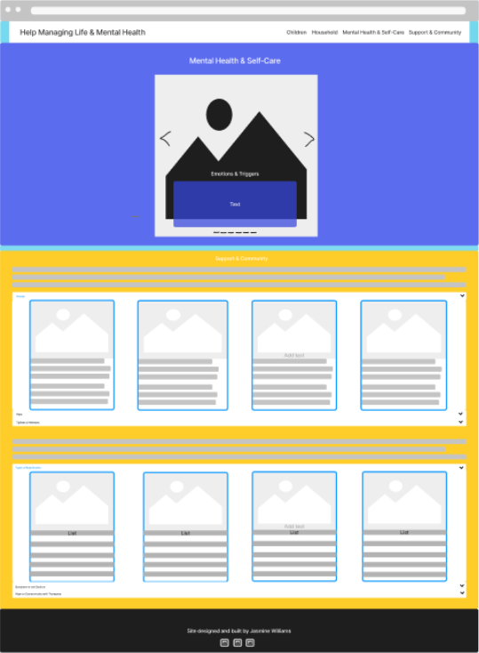
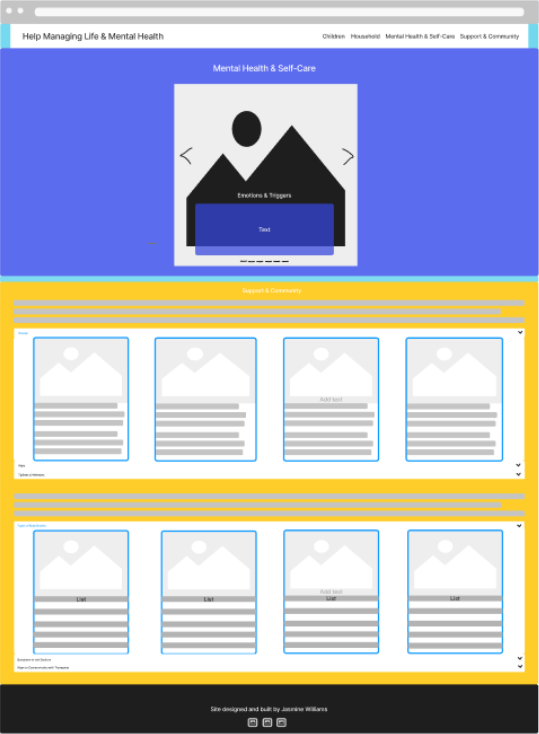
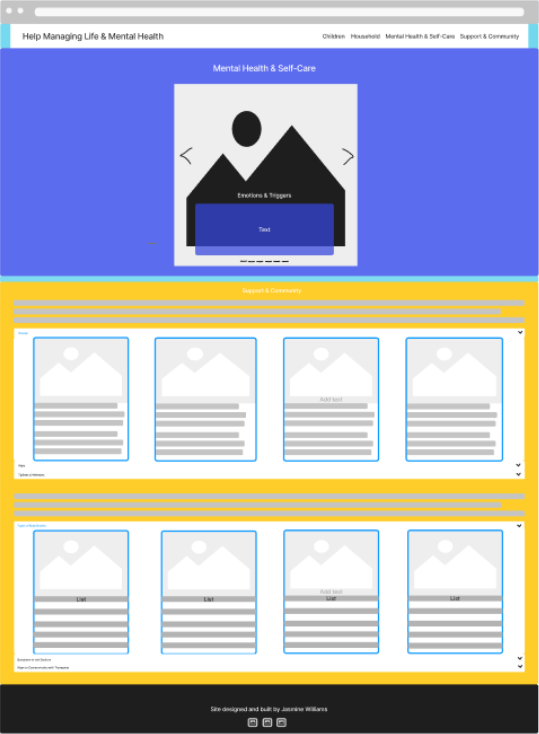

My site will be one page providing knowledge about balancing life and mental health, and will consist of the following sections.
The navigation bar will contain the title of my site, aligned left on large screens and will be the width of the screen on small screens. Responsive links to the different sections of my site will be displayed to the left on large screens and within a hamburger to the left on small screens.
On the left will be an image, on the right will be an introduction to my site and its contents. There will not be any interaction in this section.
In this section I will describe how to spend quality time with children with a time efficient bedtime routine, dancing and singing, meaningful activities, and books. Providing ways to be present and engaged with the time you have. It’ll have a heading, two cards next to each other on large screens, and they’ll stack on small screens, one will contain a list of the bedtime routine and the other will have links to different YouTube videos of songs and dances. Below the card, will be a five tiered collapsed accordion, a heading of “Meaningful Activities”, it will display meaningful activities such as, crafts, slime creation, sandbox, mud lies, zoo, etc., within each drop down will be instructions or links to each activity. Below will be twelve images books in a row with their titles beneath them, the images will have links attached to free online books.
This section will have lists on how to organize commitments, schedule, chores, and a calendar. It’ll contain four columns on a large screen and will be stacked on small screens. Each with a heading, an image displaying an example of the set-up, and a list of how to set up each section, they’ll be color coded to help keep eyes focused.There will be links on the bottom of each list to additional resources such as Google Calendar, a chore chart, Google Keep, etc..
This section will have an interactive carousel displaying tips on bettering self-care and mental health by displaying slides about emotions and triggers, nutrition, sleep, breaks and relaxing, boundaries, and exercise. There will be six slides containing an image as the background, a heading and text box in front of each picture, clickable arrows on the left and right to navigate to the next and previous slides, at the sixth slide clicking the next arrow will return to the first slide. There will also be clickable lines on the bottom of the carousel to each slide.
In this section I explain who could be considered as a part of your community or support network and provide links to apps, groups, tiplines, and websites to places that could help expand it. The section contains two text boxes and two flush accordions with three clickable tiers below each text. Both sets of text will be strictly informative and have no interaction, on one flush accordion will be headings for groups, tiplines, apps, and websites and four cards within each tier containing images on top and a description about the site below the image and have a link to the site. On the other accordion will be headings for types of nutritionists, questions to ask doctors, and ways to communicate with therapists and contains four cards within each tier. The cards will contain images on top and description of different types of nutritionists and how each could help, a list of questions for doctors, and a list of ways to communicate with a therapist.
Text "Site designed and built by Jasmine Williams" and clickable icons with links to my GitHub and LinkedIn and professional email in the center of a black footer below text.
For the design of my site I will have a color scheme that will display each section clearly and make the content easy to read, making sure that the patterns don’t distract from the content. Also, it will contain breaks between sections so you can see a background image.
